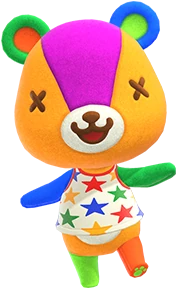

YOUR CLOSEST MATCH01
유사도
A PHOTO. A LITTLE FOREST. A FAMILIAR FRIEND.
우리 집 고양이부터 오늘의 셀카까지.
사진 한 장에서 나와 닮은 숲속
친구를 만나보세요.
첫 실행에는 AI 가중치 약 284MB와 추가 실행 파일을 내려받아요.
그다음
사진 분석은 내 브라우저에서 이루어집니다.
사진을 선택하면 시작할 수 있어요.

사진과 닮은 친구 TOP 5가 여기 나타나요.
유사도는 이미지 특징의 가까운 정도예요. 정답 확률이나 외모 점수가 아닙니다.
MEET EVERYONE
초기 시리즈부터 모여봐요 3.0까지. 콜라보 주민, 떠나간 주민, 너굴과 여울도 함께 있어요.
도감을 불러오는 중…
카드를 누르면 해당 캐릭터 이미지로 매칭을 시험할 수 있어요. 도감 검색과 위의 비교 범위는 별도로 설정됩니다.
EmbeddingGemma 2가 사진의 특징을 읽고, 도감 속 모든 이미지와 같은 기준으로 비교합니다.
선택한 사진을 외부 서버로 보내거나 저장하지 않습니다. 분석은 내 브라우저의 GPU에서.
배경·구도·색과 사물의 특징도 결과에 영향을 줍니다. 얼굴 인식이나 성격 진단은 하지 않아요.
2026년 10월 11일 확인한 Nookipedia의 시리즈 전체 주민 490명과 특수 캐릭터 목록을 기준으로 합니다. 일반 주민에는 모여봐요 3.0의 417명, 과거 작품 및 콜라보 주민을 포함합니다. 특수 캐릭터는 76개 이미지 항목이며 콩돌이·밤돌이는 한 팀으로, DJ K.K.·도토리옹·해적은 별도 모습으로 수록했습니다.
정해진 외형이 없는 플레이어·부모, 화면에 실체가 없는 Somebody·디버그용 Xsq, 미등장·삭제 캐릭터 및 모든 의상 변형은 포함하지 않습니다. 각 캐릭터의 대표 이미지 한 장을 비교하며 오래된 캐릭터는 당시 아트워크나 모델 이미지를 사용합니다. 한국어 이름을 확인하지 못한 항목은 영문 이름으로 표시합니다.
캐릭터 정보·이미지: Nookipedia 주민 목록 ↗ · 특수 캐릭터 목록 ↗. 정보는 CC BY-SA 4.0에 따라 편집·번역했습니다. 한국어 이름 보완: nook 데이터셋. 이미지 저작권은 Nintendo 등 원권리자에게 있으며, 각 카드의 출처 링크에서 원본을 확인할 수 있습니다.
566개 도감 이미지를 미리 768차원 벡터로 만들었습니다. 사진을 선택하면 동일한 EmbeddingGemma 2 모델로 사진 벡터를 만들고, 선택한 범위의 모든 캐릭터와 코사인 유사도를 계산해 상위 다섯 항목을 보여줍니다. 모델은 4비트 텍스트·이미지 구성으로 WebGPU에서 실행합니다. 토큰 처리와 순위 계산에는 CPU도 사용합니다.
모델과 실행 파일은 Hugging Face 및 jsDelivr에서 받습니다. 캐시 유지 여부는 브라우저 설정에 따라 달라집니다. 최신 Chrome 또는 Edge와 WebGPU가 필요하며, HEIC는 지원하지 않습니다. 동물의 숲 식별 전용으로 학습한 모델이 아니므로 결과가 사람의 직관과 다를 수 있어요.